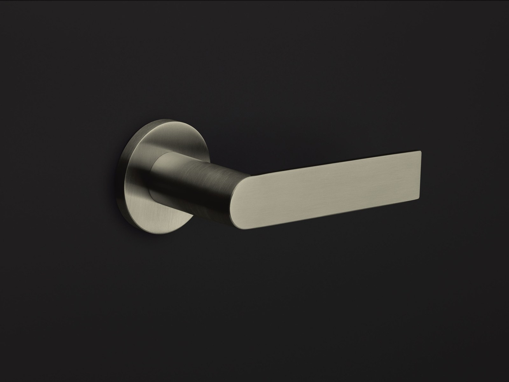

CREATURA
FORMANI
06 / 22
Коллекция

ARC
by Piet Boon
Цилиндр, разделённый ровно пополам: одна сторона плоская, другая — дуга.
Состав
двери · окна · мебель · аксессуары
Награда
German Design Award 2020
Отделки
сатин. нерж. сталь, бронза, PVD сатин. чёрный, PVD светлая бронза, PVD шампань